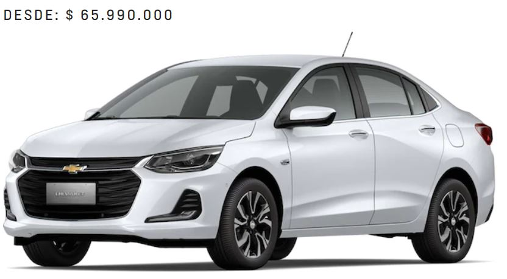
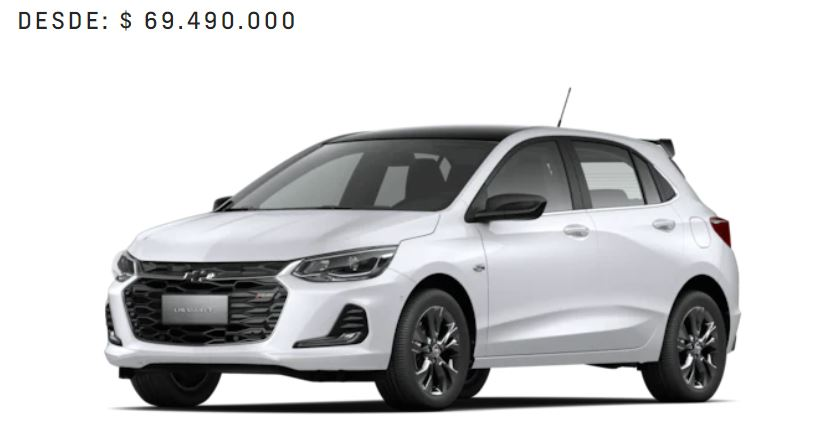

Onix Turbo Sedán

El auto que se integra a tu vida y cambia la categoría para darte más de lo que esperas
Manejar el Onix Turbo RS es vivir una experiencia que lo cambiará todo por su diseño, tecnología y confort. Cuentas con conectividad total y soluciones innovadoras, como computador a bordo. Además, un motor turbo de alto rendimiento, preparado para superar las expectativas de los más exigentes.
Onix Turbo RS

El auto que se integra a tu vida y cambia la categoría para darte más de lo que esperas
Manejar el Onix Turbo RS es vivir una experiencia que lo cambiará todo por su diseño, tecnología y confort. Cuentas con conectividad total y soluciones innovadoras, como computador a bordo. Además, un motor turbo de alto rendimiento, preparado para superar las expectativas de los más exigentes.